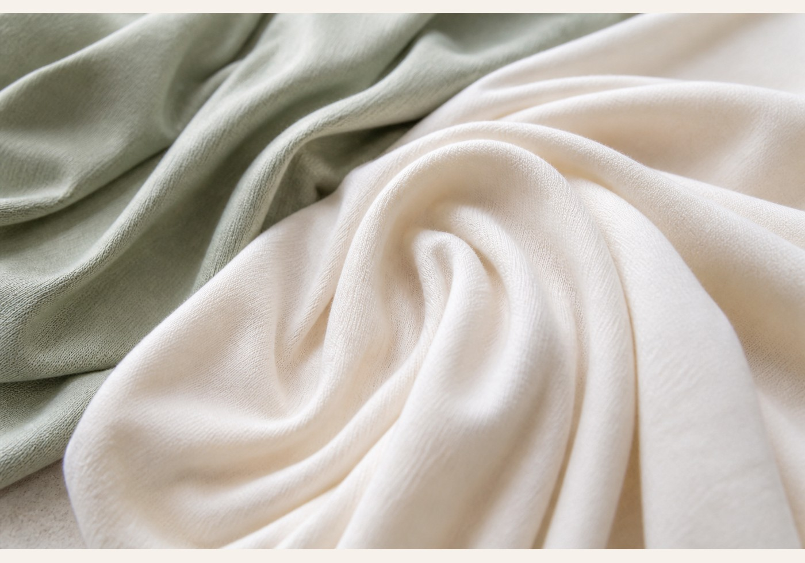

☘
Bamboo Viscose
A key fabric direction for Beefey. Bamboo viscose has a soft, cool touch and smooth drape, making it suitable for premium pajamas, robes and loungewear.
- Cool touch
- Breathable
- Fluid drape